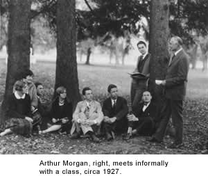

|
Antioch Home
»
About Antioch
»
The Antioch Tradition
»
Mann, Morgan Legacy | Morgan's Passions |
Contact Us | Apply to a Program | |
|
Mann, Morgan LegacyMorgan’s Passions | A First-hand Account of an Antioch VisionaryBy Academic Dean Ormond Smythe Arthur Morgan was very much in evidence in Yellow Springs when I arrived there as an 18-year-old new Antiochian in the summer of 1964. He was by then the school's president emeritus, well into his 80s, yet very active on campus, in the community and around the world. He continued to make periodic trips to India in connection with a community development project in Kerala. Not wanting — well, at least not always wanting — to meddle in the administrations that succeeded him, and being too busy with far-flung community work to teach classes, his main involvement with Antioch College in those days was to make himself available to students for informal conversations. On occasional Sundays, groups of us found our way to his modest house, where we would talk with him and his wife Lucy Griscom Morgan in their garden. Sometimes residence-hall groups invited him to sit in the common rooms in the evenings, reminiscing, philosophizing, counseling … no, that's not right. "Counseling" is too gentle a word. Birdlike yet ImposingMorgan was stern and sharp, with strong opinions, especially moral opinions. These he shared freely and pressed on us with formidable determination. He could argue and he could support his arguments with reasons, with his remarkable personal authority and with stories. Argumentative as we all were, we nevertheless hesitated to take him on frontally. We listened as if he were the Buddha, but more imposing. Tall, with angular features sometimes characterized as birdlike, he was by no means a sparrow, swallow or wren. A heron, maybe, stalking the shallows for intellectual prey, capable of darting after it in startling, abrupt movements. We were never sure quite what to expect; you had to watch out for him. So we watched, listened and asked questions. He brought forth notions we might have dismissed as crackpot had they come from anyone else. Then he'd convince us there was something to them. Inventor of Co-op PlanMorgan had been Antioch's president from 1921 to 1936, and had invented the cooperative education program and the college's unique community government system. The co-op plan, still the college's most distinctive educational venture, was both Morgan's economy measure and his great educational vision. It allowed a small college to accommodate two student bodies in a space designed for one. Two student divisions — “divs," we called them — took turns using the campus. One group would be on campus while the other was away on jobs. Morgan was practical, but a practical visionary of a sort we often don't encounter. I remember him remarking, on one of his visits with a small group of us, that the combination of practical work with a liberal arts curriculum appealed to him because the world needed more engineers able to talk about things besides engineering and baseball. Human Implications MatteredHe was himself a famously innovative engineer who served as Franklin Roosevelt's first director of the Tennessee Valley Authority. He influenced the engineering profession to take fuller account of the human implications of its work, particularly in small communities. Morgan was a convinced Quaker, due, no doubt, to Lucy's influence. He formerly was a Unitarian, in fact an influential figure in the Unitarian movement. He said he had decided that, while the Unitarians wanted a church but not a religion, the Quakers wanted it the other way around. That seemed right to him. He was always interested in the intersection of real-world issues with his special brand of no-nonsense spirituality, heavy on science, on thought and on contemplation, yet impatient with grandiose churches or the uncritical belief in miracles. Those were his enduring passions — progressive education, progressive engineering, community and a rational version of the spiritual life. He stayed with them for a lifetime. |
|
Privacy Statement | Legal Statement | Website Feedback | Log-in FirstClass | Contact Us | Site Map | Search |